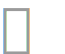

유아평가관리앱사용설명서주요메뉴유아개인평가교사평가더보기유아평가 누리과정 관찰척도사회∙정서 발달식습관공격성시간표집사건표집교사평가출처누리과정 척도 평가도구사회/정서발달 측정도구수업분위기 분석유아공격성 평가 척도식생활 습관평가방법 분류도움주신 분
유아평가관리앱
사용설명서
주요메뉴
유아
유아목록 : 기본적으로 유아들을 관리하는 메뉴입니다.
유아 선택 : 유아를 터치하시면 됩니다.
유아 추가 :
+버튼을 추가하실 수 있습니다.유아 삭제 : 유아를 길게 누르시면 삭제하실수 있습니다.
주의! 삭제된 유아 데이타는 복구되지 않습니다. 신중하게 삭제하시기 바랍니다.
유아 세부 : 유아들의 정보를 수정하거나 평가하는 메뉴입니다.
유아 수정 : 해당 유아의 정보를 수정할 수 있습니다.
유아 메모 : 해당 유아에 대해 메모를 남겨둘 수 있습니다.
평가 항목 : 선택된 유아로 6가지의 유아평가를 하실 수 있습니다.
평가항목에 대한 자세한 설명은 설명서 하단에 표기되어 있습니다.
- 누리과정 관찰척도
- 사회∙정서 발달
- 식습관
- 공격성
- 시간표집
- 사건표집
평가 결과
분류
- 누리과정 관찰척도
- 사회,정서발달
- 식습관
- 공격성
- 선택활동영역
기간
- 1학기
- 2학기
개인평가
- 유아평가와 달리 먼저 평가 항목을 정한뒤 유아를 선택하는 방법입니다.
- 각 평가항목은
유아와 동일합니다.
교사평가

- 선택활동
- 수업분위기
교사평가의 각 항목도 설명서 하단에 자세히 설명되어 있습니다.
더보기

- 로그아웃
- 평가지 출처
- 전체 가이드
유아평가
 누리과정 관찰척도
누리과정 관찰척도
3단계로 정도의 차이를 지정합니다.
- 없음
- 보통
- 많음
?버튼을 눌러 도움말을 보실 수 있습니다.…버튼을 눌러 메모를 남길 수 있습니다.중간저장이나평가완료버튼을 눌러 저장합니다. 주의! 저장하지 않으면 평가한 항목은 삭제됩니다.
학기
학기 구분 : 1,2학기로 구분됩니다.
평가 상태
- 미등록 : 아직 평가가 이루어진 적 없습니다.
- 평가중 : 현재 평가중이며 완료되지 않았습니다.
- 평가완료 : 평가가가 완료되었습니다.
평가항목
- 신체운동∙건강
- 의사소통
- 사회관계
- 예술경험
- 자연탐구

…메모기능특정 항목에 메모를 남기시려면 해당 항목을 길게 누르시면 메모를 남길수 있습니다. 남겨진 메모는 오른쪽 파란색 버튼을 통해 보실 수 있습니다.
사회∙정서 발달
3단계로 정도의 차이를 지정합니다.
1) 전혀 그렇지 않다 3) 보통이다 5) 항상 그렇다
?버튼을 눌러 도움말을 보실 수 있습니다.저장버튼을 눌러 저장합니다. 주의! 저장하지 않으면 평가한 항목은 삭제됩니다.
평가항목
- 교사에의 비의존성
- 내적통제
- 또래와의 상호작용
- 유치원에서의 안정감
- 성취동기
- 호기심

식습관
사회∙정서 발달과 같이 3단계로 정도의 차이를 지정합니다.1) 전혀 그렇지 않다 3) 보통이다 5) 항상 그렇다
저장버튼을 눌러 저장합니다. 주의! 저장하지 않으면 평가항목은 초기화됩니다.

 공격성
공격성
공격성 행동이 관찰되면 해당 항목을 터치하여 카운트를 올립니다.
주의! 하단의
변경내용 저장을 누르시지 않으면 저장되지 않습니다.
평가항목
- 대인공격
- 대물공격
- 언어공격
시간표집
시간표집법 정의
- 미리 선정된 행동을 정해진 짧은 시간동안 관찰하며 시간 간격에 맞추어 여러차례 반복하여 관찰하는 것이다.
- 관찰하는 시간을 통제하는 방법으로 관찰기간 및 관찰횟수를 어느정도로 할 것인지는 연구자의 필요와 관찰목표에 따라 정할 수 있다.
- 시간간격은 5분~10분 이내로 하는 것이 보통이다.
시간표집법의 절차
- 관찰하고자 하는 행동이나 사건을 설명하는 데 쓰이는 용어가 분명하게 정의되어야 한다.
- 시간단위를 정해야 한다.
- 관찰횟수, 총 시간의 결정을 다르게 할 수 있다.
- 부호체계는 빨리 기억할 수 있도록 논리적이고 일정한 규칙을 지니고 있어야 한다.
- 관찰기록용지에는 예기치않은 사건등을 적을수 있도록 여백을 남겨두어야 한다.
시간표집법의 지침
- 자주 나타나는 행동에 대해서만 적합하다.
- 행동이 관찰가능할 때만 사용한다.
- 다른 사람들이 모든 용어를 분명히 이해할 수 있어야 한다.
- 관찰의 목적을 밝히는 것이 중요하다.
- 기록용지의 형식을 결정한다.
장점
- 서술적 관찰방법에 비해 시간과 노력이 덜 들고 효율적으로 관찰할 수 있다.
- 신뢰도와 객관성, 대표성이 높고 자료수집면에서 효율적이다.
- 단시간 내에 많은 정보를 얻을 수 있다.
- 기술할 필요가 없어 기록이 용이하다. 수량화가 용이하다.
- 관찰하려는 행동이나 시간에 초점을 맞춤으로써 관찰상황을 통제하기 쉬우며, 행동이나 사건의 발생빈도를 파악할 수 있다.
- 행동수정 프로그램을 작성하거나 평정척도와 같은 측정도구를 만드는 데 기초자료를 제공한다.
- 관찰 대상 유아들의 생활을 방해하지 않고서도 기록과 채점이 가능하다.
단점
- 자주 일어나는 행동만이 관찰의 대상이 될수 있어서 그렇지 못한 경우에는 적용이 어렵다.
- 자료를 기록체계에 기록하지 않으면 행동, 그 질에 관한 정보를 얻을 수 없다.
- 측정행동에만 초점을 두기 때문에 인간행동간의 상호관계는 밝히기 어렵다.
- 미리 정해놓은 범주만 사용함으로써 관찰의 내용을 편견으로 이끌 가능성이 있다.
- 인과관계를 밝혀주지 못한다.
- 질적인 분석을 할 수 없고 자료가 단편적이다.
- 용어나 범주에 대한 충분한 이해가 필요하다.
- 아동 내면의 감정이나 생각을 관찰하기에는 부적당하다.
저장하고 종료버튼을 눌러 종료하지 않으면 측정한 데이타는 삭제됩니다.


사건표집
ABC서술식 사건 표집법
어떤 행동의 원인을 알려고 할때 가장 적합하게 사용할수 있는 방법입니다.
장점
- 사건이 포함된 전 후관계가 그대로 기록 되고 그 행동의 배경을 알수 있게 해줍니다. 단순히 행동의 출현 여부만 알려주는 것이 아니라 어떵 상황에서 그런 행동이 출현 되는 가를 관찰 가능하게 해줍니다.
- 자주 일어나지 않는 행동을 연구할수 있습니다.대부분 여러종류의 행동이나 사건이 일어나게 된경위와 결과를 자연스러운 상황에서 관찰할수 있습니다.
- 유아들의 어떤 행동이나 사건이 일어나게 된 경위와 결과를 자연스러운 상황에서 관찰할수 있습니다.
- 관찰대상 유아를 개별적으로 관찰할수 있으므로 개개인의 교수전략을 짜는데 도움이 됩니다.
- 유아 개인의 질적인 정보를 제공해 줍니다.
단점
- 시간과 노력이 많이 듭니다.
- 뚜렷한 관찰의 초점을 가지고 유아의 행동을 보게 되므로 교사가 마음 속으로 어떤 결론을 내리고 관찰하게 되면 교사의 주관적인 관점이 내포될수 있습니다.
- 수량화 할수 없을 가능성이 있습니다.
빈도사건 표집법
도표를 가지고 미리 정해진 범주의 행동이 일어날 때마다 기록하는 방법입니다.
장점
- 편리하고 단순합니다.
- 자료를 쉽게 수량화하고 분석할수 있습니다.
- 상당히 융통성이 있기 때문에 광범위하게 여러가지 주제를 갖고 관찰할수 있습니다.
단점
- 어떤 행동이나 사건이 얼마나 자주 일어나느냐에만 관심이 있기 때문에 출현행동의 원인을 알아내는 데는 적합하지 못합니다.
- 행동이나 사건의 양적인 자료는 제공해줄수는 있으나 유아 개인의 질적인 정보를 제공해 주기는 어렵습니다.
유아평가관리 앱에서 현재 사용하는 방법입니다.
- 해당 주제를 터치해서 빈도수을 올립니다.
주의!!
저장이나변경 데이터 적용버튼을 눌러 저장하지 않으면 측정한 데이타는 삭제됩니다.

교사평가
선택활동


한정된 장소에 여러가지 수업활동을 만들었을때, 유아들이 어느 수업에 참여하는지를 체크하는 관찰 방법입니다.
평가 방법
+버튼을 눌러 관찰 활동을 추가합니다.관찰시간과 활동영역을 지정합니다.
관찰시간
- 30초 / 1분 / 2분 / 5분 / 10분 / 15분 / 30분
수업활동
언어(읽기,쓰기), 쌓기 놀이, 역할 놀이, 수 조작 놀이, 조형 미술, 과학, 음율, 모래놀이, 컴퓨터, 요리활동
처음에는 전부 체크되어 있습니다
관찰 시작버튼을 눌러 관찰을 시작합니다.해당
활동영역 버튼을 눌러 유아를 지정합니다.기존의 활동영역에 있는 유아를 다른 활동영역에 추가를 하면 이동 됩니다. 따로 유아를 빼지 않으셔도 됩니다.
관찰시간이 종료되거나 관찰활동이 끝났으면
저장하고 종료버튼을 눌러 종료합니다.주의!
저장하고 종료버튼으로 종료하지 않으면 관찰내용이 모두 사라집니다.
수업분위기

교사의 수업에 대해 평가를 28개 문항으로 합니다.
5, 4, 3, 2, 1중 하나를 선택합니다. 독창적<> 상투적
평가 항목
1. 전체적인 수업내용은? 2. 학생들의 문제 해결을 위한 활동 모습은? 3. 문제해결 과정에 따른 교사의 간접정도는? 4. 교사의 질문 유형은? 5. 수업분위기가 이상할 경우 교사의 태도는? 이하 생략
출처
누리과정 척도 평가도구
관찰척도
3, 4세 누리과정 유아 (2013) - 육아정책연구소
연구진 : 연구책임자 이미화, 정주영 부연구위원, 엄지원 연구원, 김희정 인턴연구원, 최혜영 교수(창원대), 김명순 교수(연세대), 이완정 교수(인하대), 이정욱 교수(덕성여대), 이경옥 교수(덕성여대), 최일선 교수(경인교대)
평가척도
「5세 누리과정」 운영에 따른 유아평가 연구 (2014) - 육아정책연구소
연구진 : 이미화, 이정림, 여종일, 김경미
사회/정서발달 측정도구
- 사회·정서 발달 측정을 위해 사용한 도구는 한국행동과학연구소 (허형 등, 1978)에서 제작한 아동의 사회·정서 발달 평정 척도를 지옥정(1996)이 수정한 것을 바탕으로 용어의 수정 및 유사한 문항은 삭제하여 사용하였다.
- 평정은 교사에의 비의존성, 내적 통제, 또래와의 상호작용, 유치원에서의 안정감, 성취동기 호기심의 6개 하위 요소로 구성되어 있으며, 각 요소별로 7문항씩 총 42문항으로 되어 있다.
- 평정방법은 각 문항별로 검사자가 유아의 행동을 관찰하여 그 결과를 5단계 평정척도( 전혀 그렇지 않다 에서 항상 그렇다 까지의 5점 척도)에 표시하며 각 문항에서 받은 점수를 합산하여 각 하위요소 및 전체점수를 산출한다.
- 따라서 본 검사는 최저 42점에서 최고 210점까지 분포하도록 되어 있다.
수업분위기 분석
Tuckman 교수의 수업분위기 분석법
수업분위기 분석은 수업의 네 가지 핵심적 요소인 창의성, 활기성, 치밀성, 온화성에 초점을 두고 있다.
- 창의성있는 수업분위기는 독창적이로 창의적이로 개방적이며, 융통성이 있고 자율성·모험성·대담성을 권장하는 수업분위기이다.
- 활기성 있는 수업분위기는 능동적이고 진취적이며, 활기차고, 자신감 잇고 적극적이고 활동적이며, 외향적인 수업부뉘기다.
- 치밀성 있는 수업분위기는 체계적이고 계획적이면서 객관성과 일관서을 가지는 신중한 수업분위기이다.
- 마지막으로 온화성 있는 수업분위기는 수용적이고 공정하면서 우호적인 수업분위기를 의미한다. 수업부위기 분석은 이야기 나누기시간에 이루어지는 수업을 관찰하면서 그 결과를 기록한다.
유아공격성 평가 척도
Frodi 등(1977)은 신체적 공격행동과 언어적 공격행동에 초점을 두되 신체적 공격행동을 다시 대인공격과 대물공격으로 나누었다.
본 유아 공격성 평가 척도 문항은 Frodi 등의 분류를 기준으로 하여 대인공격, 대물공격, 언어공격으로 분류하였다. 유아의 공격성을 측정하기 위하여 한미옥(2000)의 연구에서 사용한 유아의 공격성 관찰척도(교사용)을 바탕으로 박지현(2010)의 연구, 구명실(2007)의 연구, 김유진(2005)의 연구, 박예현(2015)의 연구 등을 참고하여 구성하였다.
구명실(2007). 유아의 거친신체 놀이와 공격성과의 관계. 인천대학교 교육대학원 석사학위 논문. 김유진(2005). 공격성과 사회적 위축에 대한 유아의 추론과 행동. 숙명여자대학교 박사학위 논문. 류선영(2010). 유아의 사회적 유능성과 공격성 및 정서적 부적응 행동의 관계. 영남대학교 석사학위 논문. 박예현(2015). 인성관련 동화를 통한 극화놀이 활동이 유아의 공격성감소와 감정조절능력에 미치는 영향. 전남대학교 석사학위 논문. 박지현(2010). 유아의 자기조절능력 증진 프로그램 개발 및 적용 효과 : 자기조절능력 증진과 공격성 감소효과 연구. 성균관대학교 박사학위 논문. Frodi, A., Macaulay, J., & Thome, P. R. (1977). Are women always aggressive than men? A review of the experimental literature. Psychological Bulletin, 84(4), 842-866.
식생활 습관
유아교육기관에서의 식행동(이은혜, 2012)은 유아의 식생활과 식행동을 조사하기 위해 양영순(2008)이 사용한 아동의 식행동 측정도구를 이은혜(2012)가 유아에 맞게 수정 및 보완한 것을 사용하였다.
양영순(2008). 제주지역 초등학생의 식생활 실태 및 영양지식에 관한 연구. 제주대학교 교육대학원 석사학위논문. 이은혜(2012). 유아의 자기조절능력과 식생활 및 식행동 간의 관계 : 가정과 유아교육기관의 비교분석. 덕성여자대학교 석사학위 논문.
평가방법 분류
시간표집법
시간표집법의 특성
- 시간을 일정한 간격으로 통제하여 수집한 자료를 통해 관찰하고자 하는 목표행동을 추 정할 수 있다. 관찰하고자 하는 목표행동과 관찰범주에 대한 조작적 정의가 명료해야 한다.
- 시간표집법은 외현적으로 관찰이 가능한 행동을 수집하는데 효과적이다.
- 시간표집법은 관찰하고자 하는 행동의 출현빈도가 빈번하여야 한다.
시간표집법 활용
- 관찰을 시작하기에 앞서 관찰 지시문을 숙지해야 한다. 자료를 수집하는 과정에서 기록이 용이하려면 관찰 범주에 대한 조작적 정의가 관찰 가능한 행동으로 기술되어야 한다.
사건표지법
- 빈도 사건표집법 : 관찰하고자 하는 특정행동이 얼마나 자주 일어나는지에 대해 알고자 한다. 사건표집법에서도 목표행동에 대한 조작적 정의가 필요하다.
- ABC서술식 사건표집법 ABC서술식 사건표집은 관찰자가 관심을 갖는 특정한 행동이나 사건을 관찰대상 행동으로 정하여 교실에서 관찰대상 아동이 발생하였을 때 행동(Behavior:B)을 기술할 뿐 아니라, 관찰 대상 행동 전에 발생한 사건(Antecedent event:A)과 관찰대상 행동 발생 이후에 나타난 일 (Consequence:C)들을 자세히 관찰하여 기술하는 방법이다.
평정척도법
평정척도법의 특성
- 평정 척도법(rating scale)은 관찰하고자 하는 행동이나 현상에 대한 출현 유․무뿐만 아니라 행동의 특성 정도 혹은 출현 빈도를 평가하고자 할 때 사용한다.
- 평정 척도를 활용할 때 관찰자는 관찰하지 못한 문항에 대해서는 관찰하지 못함(N/O)이라는 칸에 표시를 하도록 한다.
- 관찰하지 못한 부분에 대해서는 관찰 기간을 연장하거나 이를 추후 검토한다.
- 평정 전에 모든 항목을 읽고 유아의 전반적인 인상으로 표시하지 않고 기술된 항목에 대하서 객관적으로 평정하여야 한다.
평정 척도의 유형
도식평정의 예
- 전혀 그렇지 않다
- 별로 그렇지 않다.
- 보통이다
- 대체로 그렇다
- 항상 그렇다
숫자평정의 예
- 1 2 3 4 5
- ├──┼──┼──┼──┤
카테고리 평정의 예
다음의 네 가지 카테고리로 나누어 평정하는 방법이다.
글자에 관심 가지기
- ( ) 글자에 대하여 관심이 없다.
- ( ) 주변의 글자에 호기심을 나타낸다.
- ( ) 주변의 새로운 글자에 대해 질문한다.
- ( ) 스스로 동화책을 읽으려고 시도한다.
도움주신 분
유구종 교수/문학박사 (강릉원주대학교 유아교육과)
김민경 교수 (관동대학교 유아교육과)
김은아 박사 (강릉원주대학교 원주캠퍼스 유아교육과 강사)
© copyright 강원유아교육진흥원